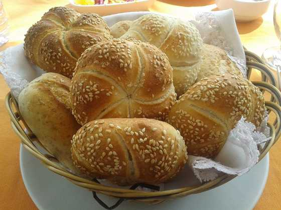
山梨県甲斐市竜王 / 住宅街の小さな工房
小さな工房で、
ひとつずつ焼くパン。
国産小麦と天然酵母で焼く、小さめサイズのパン。いろいろな種類を、少しずつ楽しめます。
お店のこと
自宅のお庭に生まれた、小さなパン屋。
紹介記事によると、小さなパン工房 RISORAは2023年11月4日、甲斐市竜王の住宅街にある自宅のお庭に、工房兼店舗としてオープンしたパン屋です。プレハブ造りのかわいらしい建物で、女性店主がお一人で切り盛りされているそうです。
国産小麦や天然酵母など材料にこだわり、約20種類ほどのパンやベーグルが並ぶと紹介されています。パンは小さめのサイズで、いろいろな種類を食べたい方やお子さまにも好評とのこと。パンごとに、試作を重ねて味のよい小麦粉を選んでいるとも紹介されています。
店名「RISORA」の意味は確認できなかったため、このページでは触れていません。

パン
国産小麦と天然酵母の、小さめのパン。
紹介記事では、ベーグルや、シンプルな食パン、レーズンやクリームチーズ入りのパンなどが紹介されています。ラインナップは日によって変わることがあるため、最新の様子はInstagramをご覧ください。
写真はパンの雰囲気を伝えるフリー素材のイメージです。お店のパンそのものではありません。

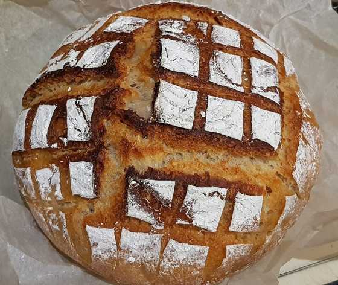
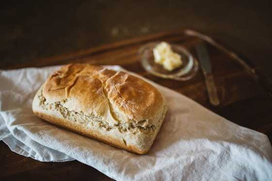
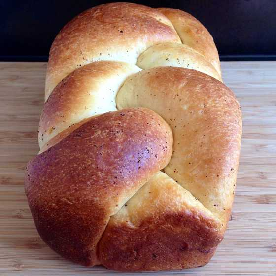
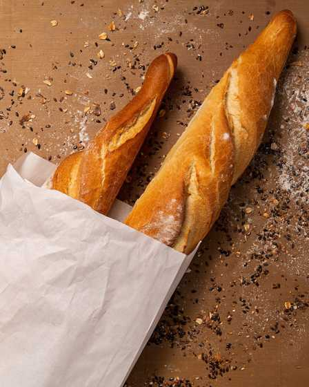
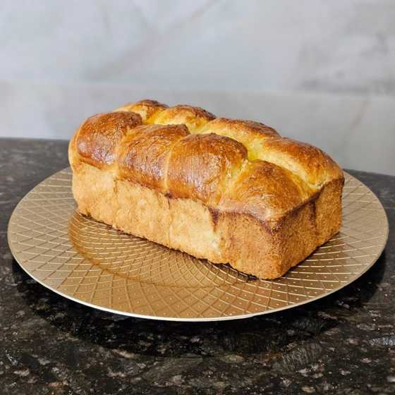
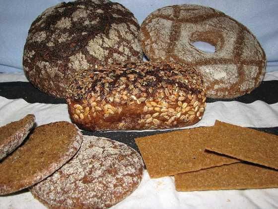
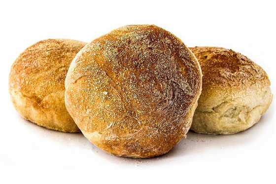
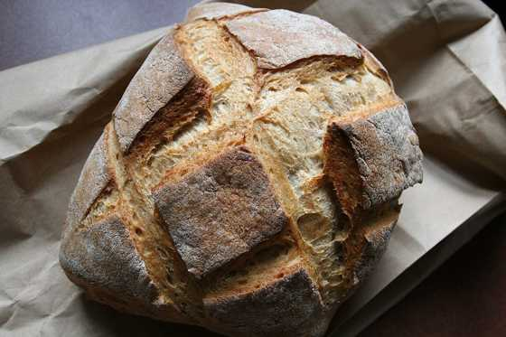
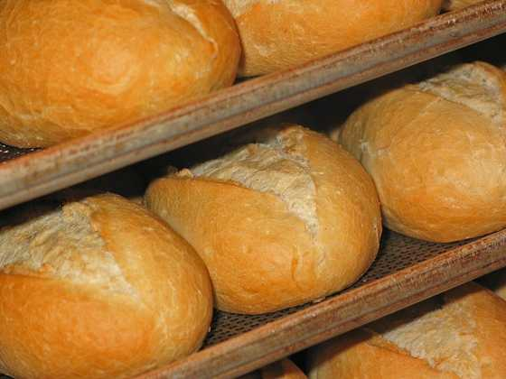
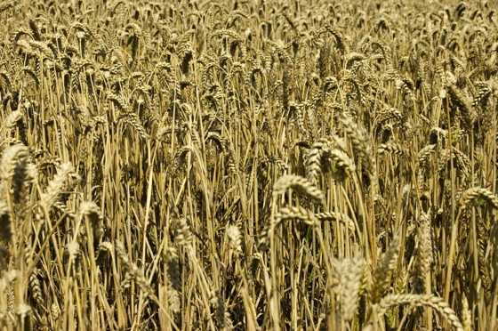

| メニュー・価格 | 準備中 |
|---|---|
| 営業時間 | 準備中 |
| 定休日 | 準備中 |
口コミ
こんな声が届きそうです。
イメージ例 以下は制作側が作った例で、実際のお客様の声ではありません。
小さめなので、いろいろな種類を少しずつ選べるのがうれしいです。
もちもちとした食感で、毎日食べても飽きません。
お店のかわいらしい雰囲気に、ほっとしました。
アクセス
甲斐市竜王の住宅街で。
| 所在地 | 日本、〒400-0118 山梨県甲斐市竜王942 |
|---|---|
| 電話 | 準備中 |
| 営業時間・定休日 | 準備中 |
| @risora_pan |
最新の営業日・販売状況はInstagramをご確認ください。